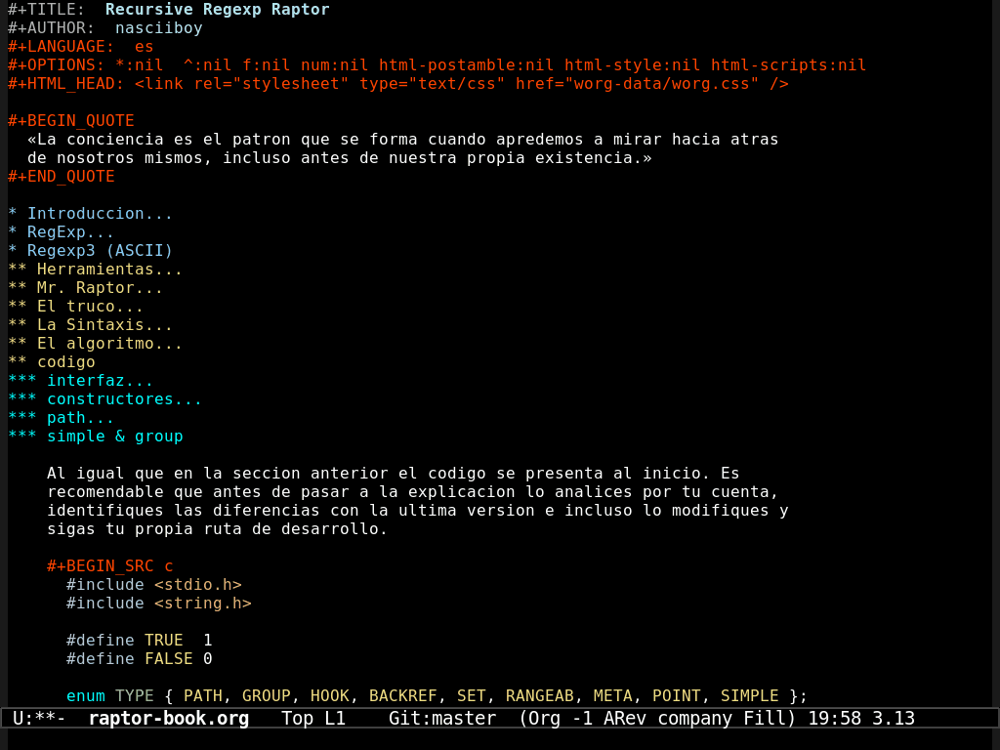
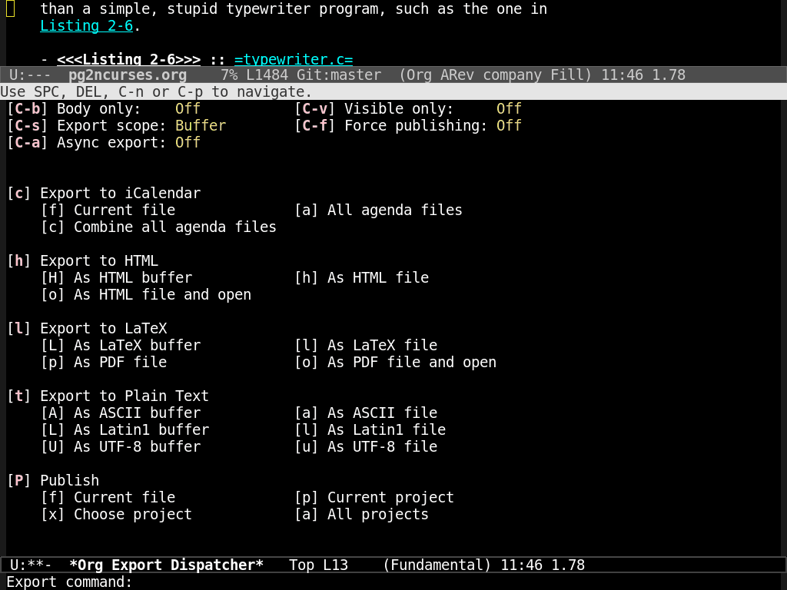

org-mode es un lenguaje de marcas ligeras nacido de, por, y para emacs y como emacs, org tambien tiene aplicaciones
varias, puede ser una agenda, una lista de pendientes, hoja de calculo, blog de
notas, sistema de documentacion e investigacion reproducible, todo junto y
revuelto, encima da la posibilidad de exportar el contenido a pdf, latex, html,
markdown, odt y groff (algunas opciones vienen por separado y requieren
configuracion).
que bueno… no? la devilidad de org esta en su diversidad, al no tener un proposito especifico, algunos aspectos no han sido resueltos, especialmente lo que respecta a ser un sistema de documentacion. Con todo, si no exiges demasiado vasta y sobra.
Imaginemos que no conoces org, odias html y tienes necesidad de generar
contenido en formato html, listo?, de eso va esta entrada
Configuracion
Para comenzar a utilizar org solo hace falta abrir emacs y crear un fichero con
terminacion .org o en su defecto agregar lo siguiente en la primer linea de
cualquier fichero y recargar (C-x C-v)
-*- mode: org; -*-
org utiliza unas marcas especiales (opcionales) al inicio del documento, para establecer el titulo, autor, correo, encender y apagar algunas caracteristicas.
#+TITLE: Cosas de Emacs: org-mode
#+LANGUAGE: es
#+AUTHOR: nasciiboy
#+EMAIL: miCorreoCamello@aya.org
#+DATE: 2015-22-06
#+DESCRIPTION: experimento org-mode
#+KEYWORDS: emacs org-mode tutorial
supongo que se explican por si mismas…
Encabezados
Cualquier cosa que escribamos inmediatamente despues de la configuaracion, sera lo primero que aparezca dentro del documento, aunque, al igual que en html, tambien podemos agrupar el contenido dentro de secciones/encabezados segun convenga.
La sintaxis de un encabezado es muy simple:
* Encabezado principal
** Segundo nivel
*** 3er. nivel
algo de texto
*** 3er. nivel
mas texto
* Otro encabezado principal
Toda linea que inicia con uno o varios * seguido por al menos un espacio en
blanco, es un encabezado.
El texto (en la misma linea) donde esta el o los * sera el titulo del encabezado.
El nivel del encabezado depende del numero de * al inicio de la linea, es
decir
*==h1**==h2***==h3****==h4*****==h5
(en realidad, al exportar a html, los encabezados se desplazan en uno, el titulo
del documento es el que se corresponde con h1, pero lo dejo asi para evitar
esfuerzo mental)
A que encabezado pertenece el texto? al primero que aparezca por encima de
el. Si no tiene un encabezado encima pertenece al titulo
del documento
NOTA: en org no existe un limite en cuanto a el nivel que puede tener un
encabezado. No es asi en html, segun recuerdo el encabezado de menor nivel que
existe en html es h7
Un ejemplo mas extenso:
* Encabezado H1
Primer parrafo del encabezado H1
Segundo parrafo del encabezado H1
** Encabezado H2
Algo,
y algo mas (sin una linea en blanco no hay cambio de parrafo)
** Otro Encabezado H2
Hey
*** Encabezado H3
coloca algo aqui
**** Encabezado H4
y aqui
***** Encabezado H5
tambien aqui
* Otro Encabezado H1
como vez, he indentado el texto que pertenece a cada encabezado (no es necesario, pero a mi me gusta que se vea asi).
Por cierto como no podia ser de otra forma podemos crear encabezados haciendo uso de atajos de teclado.
Con M-Intro si no hay ningun encabezado, aparece uno de primer nivel, de otra
forma, el nivel es igual al del encabezado anterior.
otros atajos interesantes
TABsobre un encabezado, oculta o muestra el contenidoShift-TABEn cualquier posicion, oculta o muestra el contenido de todos los encabezadosC-c C-nir al siguiente encabezadoC-c C-pir al encabezado anteriorC-c C-fir al siguiente encabezado del mismo nivelC-c C-bir al encabezado anterior del mismo nivelC-c C-uir al encabezado padreM-FlechaDerechaagregar un*al encabezadoM-FlechaIzquierdaquitar un*al encabezadoM-FlechaArribaSi el encabezado superior es del mismo nivel, intercambia el lugar de los encabezados, es decir mueve el actual hacia arribaM-FlechaAbajoSi el encabezado siguiente es del mismo nivel, intercambia el lugar de los encabezados, es decir mueve el actual hacia abajo
Listas
Como en html, disponemos de dos tipos de listas, ordenadas (numeradas) y no ordenadas, para las primeras colocamos un numero (el que sea) seguido de un punto y comenzamos a escribir
1. primer elemento de la lista
2. segundo elemento de la lista
3. tercer elemento de la lista
con una linea adicional
este parrafo tambien es parte del tercer elemento
este parrafo esta fuera de la lista
en este caso, el contenido que sea parte de un elemento de la lista, debe respetar cierta indentacion.
El numero que coloques al inicio de la lista, es irrelevante, org lo ignora por
completo y lo substituye por un ol -> li al exportar.
Como en los encabezados, podemos generar-saltar al siguiente elemento con la
combinacion M-Intro. Este atajo tiene un efecto secundario, org pasa de
nuestro numero y reenumera la lista apartir de 1.
Para salir de la lista, dejamos una linea en blanco. Org tambien considera, de
forma automatica
que estamos fuera de un listado si dejamos dos espacios
en blanco.
Si estamos dentro de un parrafo y alguna de sus lineas tiene apariencia de listado al exportar, org toma la linea y la considera una lista. No tengas lineas que inicien con algo similar a una lista.
El resto, asi son las listas ordenadas
1. elemento uno
2. elemento dos
3. elemento tres
1) elemento uno
2) elemento dos
3) elemento tres
listas no ordenadas
+ elemento uno
+ elemento dos
+ elemento tres
- elemento uno
- elemento dos
- elemento tres
Algunos comandos en listados
Shift-FlechaDerecharotacion por el estilo del listadoM-FlechaIzquierdarotacion por el estilo del listadoM-FlechaDerechaconvierte al elemento en un miembro del elemento superiorM-FlechaIzquierdaconvierte al elemento en un elemento de nivel superiorM-FlechaArribasi el elemento superior es del mismo nivel, intercambia el lugar de los elementos, es decir mueve el actual hacia arribaM-FlechaAbajosi el elemento siguiente es del mismo nivel, intercambia el lugar de los elementos, es decir mueve el actual hacia abajo
Definiciones
Este elemento tiene las mismas reglas que una lista no ordenada, es decir, el contenido que forme parte de la definicion ha de tener indentacion.
+ Palabra :: definicion
- Palabra :: definicion
los dos puntos (::) que separan la palabra de la definicion tiene que estar
en la misma linea que el signo - o +. La definicion puede extenderse en
varias lineas, parrafos e incluir bloques varios.
Al igual que una lista, las definiciones terminan dejando dos linas en blanco.
Resaltado
*bold*==> bold~code~==>code+strike+==>strike/italic/==> italic=verbatim===>code_underline_==> underline
tambien se pueden crear superindices
elemento^superinidice
el elemento y el superindice no deben tener espacios en blanco, por ejemplo
2^30==>230
en caso de los subindices
elemento_subinidice
el elemento y el subindice no deben tener espacios en blanco, por ejemplo
2_30==>230
finalmente podemos meter formulas LaTex dentro del texto (inline) con la
sintaxis $formula$, por ejemplo
$ne^{123^{a}}$==>ne123a
Enlaces
[[prefijo:ruta][descripcion]]
la descripcion puede omitirse, quedando
[[prefijo:ruta]]
enlaces soportados
http://www.astro.uva.nl/~dominik en la red
doi:10.1000/182 DOI para un recurso electronico
file:/home/dominik/images/jupiter.jpg fichero, ruta absoluta
/home/dominik/images/jupiter.jpg igual que arriba
file:papers/last.pdf fichero, ruta relativa
./papers/last.pdf igual que arriba
file:/myself@some.where:papers/last.pdf fichero, ruta a una maquina remota
/myself@some.where:papers/last.pdf igual que arriba
file:sometextfile::NNN fichero, saltar al numero de linea
file:projects.org otro fichero Org
file:projects.org::some words buscar texto en fichero Org[fn:35]
file:projects.org::*task title buscar encabezado en fichero Org[fn:36]
file+sys:/path/to/file abrir via OS, como doble-click
file+emacs:/path/to/file fuerza apertura con Emacs
docview:papers/last.pdf::NNN abrir en modo doc-view en la pagina
id:B7423F4D-2E8A-471B-8810-C40F074717E9 Enlazar con ecabezado por ID
news:comp.emacs enlace Usenet
mailto:adent@galaxy.net enlace Mail
mhe:folder enlace a carpeta MH-E
mhe:folder#id enlace a mensage MH-E
rmail:folder enlace a carpeta RMAIL
rmail:folder#id enlace a mensaje RMAIL
gnus:group enlace a grupo Gnus
gnus:group#id enlace a articulo Gnus
bbdb:R.*Stallman enlace BBDB (con regexp)
irc:/irc.com/#emacs/bob enlace IRC
info:org#External links enlace a nodo o indice Info
shell:ls *.org Un comando shell
elisp:org-agenda Comando Interactivo Elisp
elisp:(find-file-other-frame "Elisp.org") formate de evaluacion Elisp
Ademas podemos poner enlaces a secciones (encabezados) dentro de nuestro documento con la estructura
[[*Encabezado][descripcion]]
recuerda, la descripcion es opcional
Si te encuentras en el modo org, y deseas segir un enlace presiona C-c C-o.
Para regresar a la posicion original C-c &.
Tambien puedes colocar una marca temporal C-c % y luego regeresar con C-c
&. Esto es similar al comando C-u C-ESP que permite recorrer el circulo de
marcas.
Para modificar la direccion de un enlace o su descripcion presiona C-c C-l
Por cierto, para colocar imagenes dentro del contenido que exportes simplemente coloca la direccion de la imagen, asi:
[[mi-imagen.png]]
Radio Targets
Los Radio Objetivos, son un metodo automagico de convertir una frace en
un enlace a algun punto del documento, lo unico que tenemos que hacer es
encerrar el objetivo entre tres pares de < > asi:
<<<Mi objetivo>>>
ahora todo el texto que coincida con Mi objetivo apunta al radio objetivo, no
importa si esta separado por espacios (exepto nuevas lineas) o si esta en
minusculas o mayusculas.
Codigo
Org tiene distintos tipos de bloques, todos con esta sintaxis
#+BEGIN_Tipo-Bloque algun-parametro
contenido
#+END_TIpo-Bloque
donde Tipo-Bloque puede ser
EXAMPLEejemplos (como<pre>)HTMLseccion de codigo a exportar tal cualLaTexseccion de codigo a exportar tal cualSRCbloque de codigoQUOTEbloque de cita
hay un truco, que evita escribir a mano todo el bloque. En una linea vacia o con
espacios en blanco escribimos < segudio por
e==>EXAMPLEh==>HTMLl==>LaTexs==>SRCq==>QUOTE
y mas un tab el bloque aparece!
Es necesario ahondar un poco en los bloques de codigo fuente
#+BEGIN_SRC c
/* strlen: regresa la longitud de s */
int strlen(char s[])
{
int i;
i = 0;
while (s[i] != '\0')
++i;
return i;
}
#+END_SRC
el lenguaje se especifica luego de #+BEGIN_SRC, en este caso, lenguaje c,
tambien podemos hacer que el codigo aparesca numerado, si agregamos el parametro
-n. Si se desea que la numeracion inicie a partir de un numero concreto
colocamos -n numero.
Antes mencione que org nacio de, por y para emacs, pues resulta que esto se
demuestra en los bloques de codigo. Sea cual sea el lenguaje que coloques
delante de un bloque de codigo (digo, si esta soportado) al presionar C-c ' se
abre un buffer con un modo para editar dicho lenguaje con resaltado, con teclas
de emacs y funciones de emacs. Otro C-c 'te regresa al documento.
Puedes imaginar el colosal esfuerzo que requiere emular esta funcion en otro sitio que no sea emacs?
asi se ve org-mode en mi emacs

NOTA: a veces en versiones experimentales de emacs, la convinacion C-c
' abre un buffer de edicion para el bloque de codigo, pero al repetir el
comando, este no se reconoce, si ocurre esa situacion, intenta con los comandos
por su nombre directamente. Para entrar es org-edit-src-code y para salir
org-edit-src-exit
Exportacion
En principio, exportar apartir de org es sencillo, presionamos C-c C-e.

Esto abre una interfaz de exportacion con opciones varias, por ejemplo para
exportar a html (un fichero con el mismo nombre del documento pero con
terminacion .html) el comando completo seria C-c C-e h h, o si estas ya en
la interfaz Org Export Dispatcher, solo h h.
Pero antes de exportar vamos a modificar algunas cosas. En la configuracion del documento agrega estas lineas:
#+OPTIONS: toc:nil num:nil h:7 html-preamble:nil html-postamble:nil html-scripts:nil html-style:nil
#+HTML_HEAD: <link rel="stylesheet" type="text/css" href="worg-data/worg.css" />
#+HTML_HEAD: coloca alguna cosa dentro de la etiqueta head del html,
para ser precisos, se indica la direccion de una hoja de estilo.
Aqui encontraras la que utilizo.
cuando se exporta por defecto, se crea una tabla de contenidos, si no la
quieres deja el toc:nil, tambien se numeran las secciones, como 1, 1.1,
2, 2.1.2 y asi, num:nil indica que no queremos numeracion.
h:7 indica cuantos niveles de encabezados deseamos exportar como Hs. Si hay
encabezados que superen el nivel, seran incluidos, pero en forma de lista.
html-postamble:nil elimina una seccion al final del html que contiene el
autor, fecha y correo(?), html-preamble-nil no se que haga pero tampoco lo
quiero…
veras que org es generoso, nos regala una hoja de estilo y scripts
html-scripts:nil y html-style:nil se las regresan… de buena forma… pero
org insiste, pasa de nosotros y las coloca de todas formas (por lo general, como comentario)
por cierto, para mostrar las formulas LaTex en html, org coloca por su cuenta esta linea
<script type="text/javascript" src="http://orgmode.org/mathjax/MathJax.js"></script>
Colorear Codigo (al exportar)
Esto requiere algo de codigo (ha, ha, ha…), primero ve a tu carpeta de configuracion. En mi caso es
cd ~/.emacs.d/plugins/
luego
git clone https://github.com/emacsmirror/htmlize.git
y agrega esto en tu archivo de configuracion
;;;;;;;;;;;;;;;;;;;;;;;;;;;;;;;;;;;
;; PACKAGE: org-mode ;;
;;;;;;;;;;;;;;;;;;;;;;;;;;;;;;;;;;;
;; source: https://github.com/emacsmirror/htmlize.git
(load-file "~/.emacs.d/plugins/htmlize/htmlize.el")
;; esto activa el coloreado
(setq org-src-fontify-natively t)
;; por defecto se coloca el color en linea, descomenta
;; si quieres este comportamiento
;; (setq org-html-htmlize-output-type 'inline-css)
;; en mi caso prefiero tomar el estilo de una hoja css
;; comenta si eliges lo anterior
(setq org-html-htmlize-output-type 'css)
;; las siguientes lineas son para colocar o no un prefijo a
;; las etiquetas de codigo (todas son de tipo <span>)
;; (setq org-html-htmlize-font-prefix "") ;; default
(setq org-html-htmlize-font-prefix "src-")
podria interesarte saber que puedes convertir cualquier buffer de emacs, en una
pagina html. El comando es htmlfontify-buffer.
Al parecer, htmlize es una vesion vieja
del modo htmlfontify
(incluido por defecto), a saber por que org requiere de htmlize
Cosideraciones adicionales
org, y otros lenguajes de marcas ligeros tiene carencias severas de base, no solo por utilizar signos comunes para el resaltado, lo que proboca que en ocaciones se interprete de manera inesperada el resaltado o simplemente no se interpreta. Tambien estamos limitados a 4-5 opciones de resaltado.
Segun el manual, podemos evitar comportamientos extraños escapando caracteres
con \ peeeero esto no funciona del todo bien. Como alternativa se ofrece
escribir simbolos al estilo LaTex \nombre-simbolo peeero esto tampoco funciona
del todo bien.
en mi caso paso del resaltado y lo desactivo con la opcion
*:nil, para eliminar la interpretacion de (super|sub)indices ^:nil
para poner etiquetas html directamente
@@html:lo-que-sea@@texto@@html:lo-que-sea@@
por ejemplo
@@html:<b>@@texto@@html:</b>@@
je, je, je… que comodo!
Si estas creando un documento en partes
para incluir las secciones, coloca
esta linea en la posicion donde debe aparecer el contenido de otra seccion
#+INCLUDE: "~/my-book/chapter2.org" :minlevel 1
Para terminar Org tiene muchos atajos, la mayoria con prefijo C-c que
supuestamente es el espacio donde el usuario (y los modos) define(n) sus propios
comandos. Como resultado tus comandos seran ignorados. La solucion? pues yo pase
mis comandos a s-c (Super-c).`
Recursos, Enlaces y Fuentes
Org es amplio, tanto que tiene un manual-libro incluido dentro de emacs en el
modo info, date una vuelta que no muerde
Graficos en org-mode http://www.lapipaplena.net/graficos-con-org-mode-ditaa-y-plantuml/
Traduccion parcial, de mala calidad e intento de adaptar el manual de org-mode a org-mode